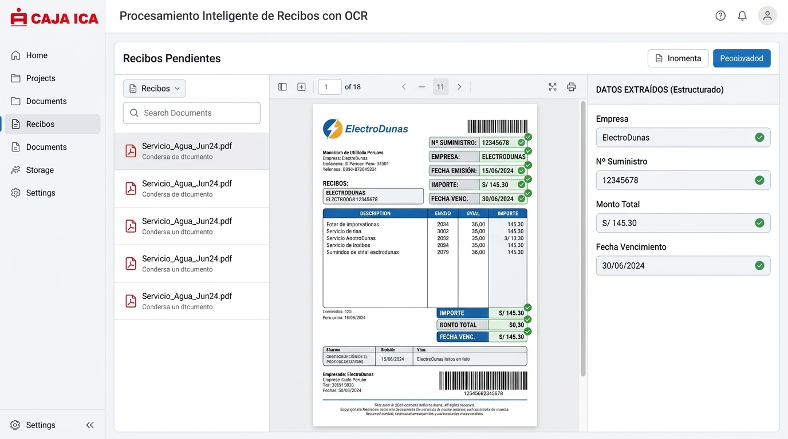

OCR

Descripción
Se desarrolló e implementó un componente OCR para logística, integrado con el aplicativo core de Indigo Administrativo para cargar archivos. Inicialmente procesó recibos de luz, agua e internet, reduciendo el tiempo operativo que el área usuaria dedicaba a buscar qué datos ingresar de cada recibo.
La implementación usó Java 25, Spring Boot y Spring AI con arquitectura limpia, pruebas con Mockito, SonarQube y OWASP Dependency-Check para revisar vulnerabilidades. AWS Textract, Amazon SNS y Amazon SQS se integraron mediante AWS IAM Roles Anywhere para acceder a los recursos de AWS. Amazon Bedrock permitió generar datos más depurados y estructurados.